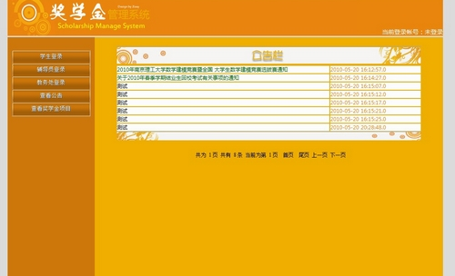
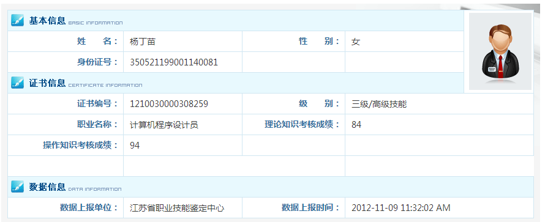

杨丁苗
基本信息

现居地: 江苏-南京
户口地: 江苏-南京
出生年月: 90年-1月
技术博客: http://zoeyyoung.github.io/
Github: https://github.com/ZoeyYoung
教育经历
硕士 —— 南京理工大学211院校
专业: 计算机科学与技术院系 软件工程专业
本科 —— 南京理工大学
专业: 计算机科学与技术院系 网络工程专业
专业GPA: 3.36（满分4分制）, 保送研究生
项目经验
Chrome浏览器插件 ——
为书签云项目制作的Chrome浏览器插件, 可直接在浏览器中保存网页至书签云中.

书签云项目 ——
用于保存平时浏览的网页, 并可做简单的笔记或评论. 类似美味书签, 通过定制, 更适合有效管理个人书签. 主要可用于学习记录, 笔记软件通常用于保存全文, 但有的并不想保存全文, 只想简评一下时比较有用. 也有利于写博客中的参考博文链接的搜索与添加.
使用的技术: Web框架使用Tornado, 数据库使用MongoDB, 正文提取在readability-lxml基础上进行修改, 分词采用结巴分词, 全文搜索Whoosh, 支持中文, 前端界面以Bootstrap 3为基础进行设计, 使用jQuery进行部分Ajax交互.

创建独立博客并独自设计主题 ——
使用静态博客生成引擎Pelican进行博客写作与发表, 并独立设计博客主题, 博客部署在Github上.
热爱使用Markdown等轻量级标记语言进行写作. 有格式强迫症.

Web端即时通讯 ——
在永中实习期间的项目, 独立维护, 对公司原有的代码进行了大量的修改, 解决了大量原有Bug, 并对原有代码进行了重构、优化
主要使用语言为Java与javascript，运用到的JS框架有jQuery、ExtJS、Dwr, 使用DWR进行数据推送与Ajax数据获取, 后台采用Java EE的SSH框架.

基于XMPP的Web端即时通讯 ——
基于XMPP的Web IM项目, 使用jQuery, Strophe.js进行开发, 服务器使用Openfire. 期间发表博文Openfire集成现有系统数据库用户帮助了许多有相同需求的同行.

中外合作办学项目管理系统 ——
中外合作办学是指中国教育机构与外国教育机构依法在中国境内合作举办以中国公民为主要招生对象的教育教学活动.
本系统以我校卡耐基梅隆合作办学为背景, 采用Java EE进行开发, 设计B/S结构的信息管理系统, 能够做到统一的项目宣传和信息服务功能.
项目在MyEclipse下采用Struts2和Hibernate框架进行开发.
期间设计了多款界面, 得到老师好评与肯定

奖学金管理系统 ——
作为组长与队友开发, 项目在MyEclipse下采用Java EE SSH架构, 获"优秀".(注: 其中优秀比例为5%)
OA办公自动化系统 ——
独立使用ASP.NET开发, 获"优秀".(注: 其中优秀比例为5%)
其它
使用过PHP与Ruby进行快速网站开发, 但均未深入, 故忽略.
语言能力
英语水平：CET-6
证书
职业资格证书
证书号：1210030000308259 工种：计算机程序设计员 级别：三级/高级技能
IT技能
- 熟悉C、Java、Python;
- 熟悉SQL语言, 熟悉MySQL、SQL Server等数据库系统; 使用过分布式文档存储数据库MongoDB;
- 熟练使用Eclipse等可视化辅助软件开发工具; 通常使用Sublime Text 2进行简单程序开发;
- 会使用SVN, GIT等版本管理工具进行代码管理; 学习过使用Maven作为项目构建工具;
- 熟悉J2EE架构, 能够使用spring、struts2、hibernate等框架进行动态网页的开发;
- 有过Python的Flask框架与Tornado框架开发经验;
- 熟悉javascript、ajax、html、xhmtl、css等Web前端开发技术，能够熟练使用xhtml、css进行页面设计，并且熟悉ExtJS、jQuery和Dwr框架;
实习经历
无锡永中软件有限公司 ——

企业性质: 国企 工作类型: 实习
公司培训: 2012-8 至 2012-9 NIIT
工作职责: 云办公组研发人员, 独立进行Web端即时通讯开发
实习期间, 前期开发了基于XMPP、jQuery、jQuery UI的Web IM项目
后期对公司原有的基于Dwr、ExtJS的项目进行改进, 重构, 并且实现新的规格需求, 将原有只能在企业内部进行聊天的Web IM程序, 扩展为可多个企业, 企业用户之间可添加好友并进行好友管理的功能比较完整的Web IM.
实习期间参加无锡市新区总工会举办的"承接与创新杯"2012年新区职工劳动技能大赛的"软件设计"项目排名第2，获得"新区岗位能手"、"无锡市五一创新能手"、"无锡市五一巾帼标兵"称号
培训经历
NIIT 2012-8 至 2012-9
自我介绍
90年1月出生, 阴历89年, 所以喜欢把自己归于80后.
摩羯座, 传说中的工作狂. 愿意花几个小时在电脑前看代码, 却觉得走半小时出去吃饭是很烦人的事.
传说中懒惰的程序员, 不喜欢做重复的事情. 愿意花1小时搞这个个人简历页, 却觉得填写每个公司的简历页是很烦人的事.
算是技术宅, 好折腾. 重装系统什么的是家常便饭了. 有什么电脑问题找我经常能神奇的好了.
虽然只稍微使用过ASP.NET, 但在同学做毕业设计时能给矛指导帮助.
在搞Android的同学有时会来向我请教, 虽然我没开发过.
平时喜欢浏览各种技术网站博客, 有使用Github, 分享自己的代码.
虽然看的东西很多, 但是有个缺点就是健忘, 所以习惯于把学习的东西用博客的形式记录下来.
理想的生活是有个稳定的工作, 然后住的地方离工作的地方不远.
喜欢摇滚、说唱, 尤其是60、70年代的老摇滚.
Neil Young、Eminem、Pink Floyd、Nirvana...
喜欢看推理小说, 但是其实看得还不多, 几十来本
阿婆、福尔摩斯、东野圭吾、 西泽保彦、 西村京太郎...